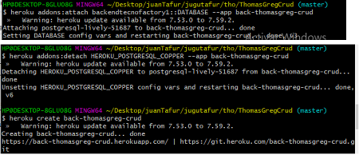

<div class="container">
    <table class="table table-striped table-hover table-bordered align-middle">
        <thead>
            <tr>
                <th scope="col">Referencia</th>
                <th scope="col">Descripcion</th>
                <th scope="col">Ejemplo</th>
            </tr>
        </thead>
        <tbody>
            <tr>
                <td colspan="3" class="titulo"><strong>git</strong></td>
            </tr>
              
            <a href="https://ed.team/blog/como-se-deciden-las-versiones-del-software"> url para saber como diseñar las versiones</a>
            <tr>
                <td>Comandos git</td>
                <td>
                    npm rebuild node-sass <br />
                    npm install --save-dev node-sass <br>
                    npm update caniuse-lite <br>
                    npm install <br />
                    ng build <br />

                    angular <br />
                    npm install -g @angular/cli <br />
                    ng new project-name --routing=true --style=scss<br />
                    https://angular.io/cli <br />
                    ng serve <br />
                </td>
                <td></td>
            </tr>

            <tr>
                <td>Comandos git</td>
                <td>
                    mv nombre achivo //cambio ubicacion <br>
                    mkdir // crear carpeta <br>
                    rm "Xarchivo" //borrar archivo <br>
                    cat "Xarchivo" //ver archivo en consola <br>
                    touch //crear archivo <br>
                    clear o cls //borrar pantalla <br>
                    ls o dir // ver archivos <br>
                    pwd mostrar la ruta donde se enecuentra <br>
                    git --version // version de git <br>
                    git fetch origin //para ver que cambios hay entre ramas <br>
                    git commit -am "comentario"//agregar y comentario <br>
                    git remote -v //conocer cuales  respositorios tengo <br>
                    git remote remove nombreReposotirio // elimanar repositorio <br>
                    git branch -D nombreRama// para eliminar rama de forma local <br>
                    git push origin --delete nombreRama// para eliminar rama del remoto <br>
                    git pull origin master// para bajar los cambios de cierta rama <br>
                    <a href="https://explainshell.com/explain?cmd=git+log+--all+--graph+--decorate+--oneline+--simplify-by-decoration">
                        git log --oneline --all --graph --decorate //para mostrar en cosola lo cambios que he realizado </a> <br>
                    git lg // <br>
                    git stash //cuando tenemos algo imcompleto para no realizar un commit.
                     permite almacenar provicionalemnte los cambios en los memoria para pasarnos a otra  rama  <br>
                    git stash list //para cuales cambios tengo almacenados
                    git stash pop //recuperar esos cambios

                    ssh -v //version de ssh <br>
                    godoc fmt //documentation de la liberia <br>
                    ls -lh //ver no solo los documentos que estan en esa carpeta si no ademas los permisos solo estos
                    documentos <br>

                </td>
               
                <td></td>
            </tr>

            <tr>
                <td>
                    <strong>Pasos para subir cambios entre ramas</strong>
                </td>
                <td>
                    <p>Nota despues de subir los cambios a la rama que se este trabajando:</p>
                    <p>1. aceptar la solicitud de comparacion y estracion en Git </p>
                    <p>2. create pull request: se va diricionar a un registro para el ingreso de comentarios. pero lo mas
                        importante es la comparacion interna y la verificacion interna para no dar conflitos entre las ramas.
                        Despues continuamos con la creacion de solicitud de extracion</p>
                    <p>3. Confrimar Merge, despues va reflejar el resultado de la solicitud</p>
                    <p>4.finalmente se confirmara de forma de visual que fue exitoso el Merge</p>
                    <p>Nota final: para ver la actualizados los cambios entre las ramas: git pull </p>
        
                </td>
                <td>
                    
                </td>
  
            </tr>
            
              
            <tr>
                <td>Etiquetas(nota solo se crean en la rama master</td>
                <td>
                    git tag "vO.O.1"//nos permite crear una refencia para que apunte a un commit en especial</td>
                    git push origin --tags//para publicar etiquetas
                <td></td>
            </tr>

            <tr>
                <td colspan="3" class="titulo"><strong>Heroku</strong></td>
            </tr>

            <tr>
                <td>Comandos Heroku</td>
                <td>
                    heroku login //acceder a la cuenta<br>
                    heroku create xProyect //crear proyecto<br>
                    heroku addons:create heroku postgresql //cread DB <br>
                    heroku config //ver config DB <br>
                    <strong>ver imagen pra compartir DB entre proyectos heroku <br>la primera app es el nombre del
                        proyecto al que querremos donde se instale la segunta referencia de app es el proyecto que tiene
                        la BD <br><br> TENER EN CUENTA EL LA PALABRA COOPER EN ESTE CASO QUE HACE REFERENCIA AL COLOR
                        ESTO ES PARA DESLIGAR DE DEJAR DE COMPARTIR UN BD ENTRE PROYECTOS</strong> <br>
                </td>
                <td>
                    <br><br>

                    <a href="https://devcenter.heroku.com/articles/managing-add-ons">ver info</a>
                </td>
            </tr>

            <tr>
                <td></td>
                <td></td>
                <td></td>
            </tr>

            <tr>
                <td></td>
                <td></td>
                <td></td>
            </tr>

            <tr>
                <td></td>
                <td></td>
                <td></td>
            </tr>
        </tbody>
    </table>
</div>